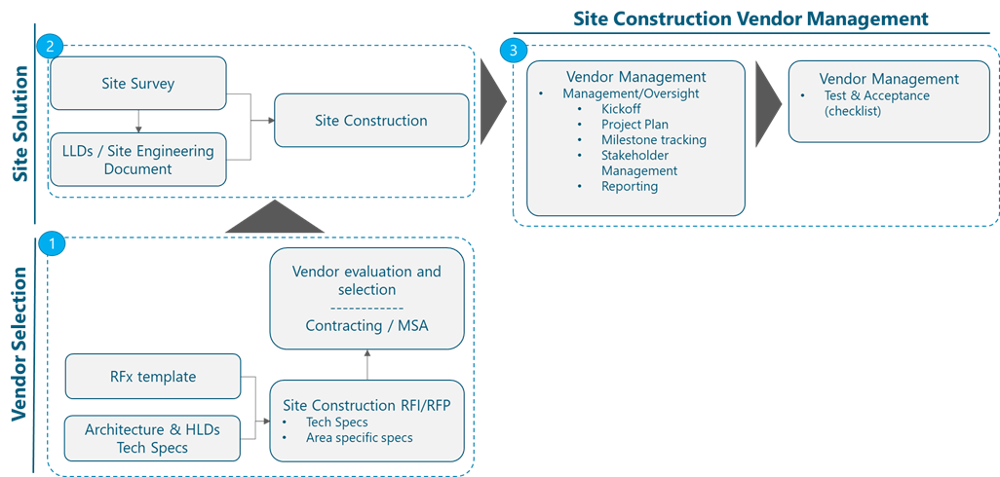

1 Introduction
The Site Construction Management Module provides the NaaS Operator with background information and methodologies to go through the Site Construction process. It starts providing an overview of the Construction process, including a step approach which starts with the Technical Site Survey, Architectural and Engineering Analysis, and continues with a review of the tasks in the civil, electrical and mechanical construction areas. The module continues with a review of all construction components including primary support structures, equipment cabinets or shelters, cable management facilities, antenna mounting structures and power supply, grounding and lightning construction components.
Construction services from 3rd Parties need also to be considered for Site Construction. The Site Construction Module creates awareness of such Site Construction services and provides NaaS operators with the tools for requesting, evaluating and selecting partners to execute these services. Finally, the module addresses the management of Site Construction Vendors as they go through the construction execution phase.
1.1 Module Objectives
The Site Construction module will enable a NaaS Operator to manage the construction of RAN sites. The module has the following specific objectives:
1.2 Module Framework
NaaS Runbooks Framework shown in Figure 1 displays the PlayBook Modules and their relationship to Site Construction Management.
Strategic Plan & Scope and High-Level Network Architecture drive the strategic decisions to forthcoming phases. Deployment is the second step in the implementation strategy, and the same as other modules, it is supported by Supply Chain Management.
The Site Construction Management module is included within the Deployment stream. Within this stream, Site Construction Management Module has a direct relation with Site Survey Module which constitutes a relevant input to determine the specific Site solutions. Site Construction Management also takes inputs from Network Design Modules including Civil & Power Design Module.
Site Construction Management Module provides NaaS operators with guidelines for evaluation and selection as well as management of Site Construction Vendors
Figure 1. Module Framework
Figure 2 presents the Site Construction Management functional view where the main functional components are exhibited:

Figure 2. Site Construction Module Framework
The rest of the module is divided into four sections. Section 2 is an overview of the Site Construction Management end-to-end process. Section 3 provides a more detailed description of the construction components necessary to better understand the design of the specific Site solutions. Section 4 details the process to select Site Construction partners that will execute the construction activities required by the NaaS Operator. Finally, Section 5 addresses the management of Site Construction Vendors, including the description of reporting, documentation, and acceptance requirements.
2 Site Construction Process Overview
Figure 3 shows an overview of the Site Construction process, showing in green color the tasks which involve Construction Teams (tasks which usually will be outsourced to Site Construction Vendors):
Figure 3. Site Construction Process Overview
Understanding the Site Construction flow will help a NaaS Operator manage the end-to-end set of construction activities and will help them to better describe the requirements to be included in the RFx processes for selecting partners for Construction.
This section describes the Construction activities starting with Technical Site Survey, which will be followed when required by an Architectural and Engineering analysis of the site solution and then the generation of the Site Engineering document. These pre-construction activities will be followed by construction activities which are divided into Civil, Electrical and Mechanical works. Once Civil works and Electrical and Mechanical works have been finalized, the Site will be ready for Construction Acceptance before proceeding with Network Equipment Installation which is addressed in the I&C Module
Table 1 provides a high level view of responsibilities between main stakeholders involved in Site Construction in a NaaS environment (some variations may occur depending of specifics of the NaaS operational model):
|
Construction Area |
Construction Task |
Responsible |
|
Site Survey |
Carry out Site Survey |
Constr. Partner or TowerCo + NaaS (optional) |
|
Generate Technical Site Survey Report |
Constr. Partner or TowerCo |
|
|
A&E Analysis |
Carry out Structural Analysis |
Constr. Partner or TowerCo |
|
Generate Site Engineering Document |
Constr. Partner or TowerCo |
|
|
Validation |
Validate Site Solution |
NaaS Operator |
|
Civil Works |
Preparation |
Constr. Partner or TowerCo |
|
Foundations |
Constr. Partner or TowerCo |
|
|
Mechanical & Electrical |
Mechanical Construction Component |
Constr. Partner or TowerCo |
|
Electrical Construction Component |
Constr. Partner or TowerCo |
|
|
Acceptance |
Construction Acceptance |
NaaS Operator |
Table 1. Site Construction Responsibilities.
2.1 Technical Site Survey
The Objective of the Technical Site Survey task is to determine the suitability of the proposed location to accomplish with engineering objectives. During the Technical Site Survey, the Construction team needs to determine the most suitable construction site solution and gather all the information which will allow a later engineering analysis and the generation of the Site Engineering document.
The output of the Technical Site Survey is the Technical Site Survey Report, which includes information about the new structure to be built or the existing structure to be adapted. Technical Site Survey Report can also include space analysis, power supply analysis as well as drawings and photos which will allow a later post processing to carry out structural analysis and generate the Site Engineering document.
The Site Survey process is schematized in Figure 4:
Figure 4. Site Survey Process
For more detailed information about the Site Survey activities, please refer to Site Survey Module, which is also part of the Deployment area as introduced in section 1.2.
For more information please review the Site Survey Module, which offers a guideline to help NaaS Operators to determine the resources who should be performing the Technical Site Survey in a Rural Environment.
NaaS Operator can use the provided Technical Site Survey template (template A) to record the information collected through the Technical Site Survey activities.
2.2 Architectural and Engineering Analysis
The main objective of the Architectural and Engineering analysis is to perform the structural analysis and validate the solution selected after the Technical Site Survey.
This analysis is important to certify that the supporting structure to be installed or re-utilized will be able to support the load that is being planned to be mounted on the tower/building. The NaaS Operator and/or the construction Vendor will be legally responsible for ensuring the safety of the site from a structural point of view and therefore the structural analysis is critical to avoid the possible collapse of the structure mainly due to wind.
Structural Analysis consists of the tower load analysis subject to components load (i.e. all the equipment which will be installed in the tower), as well as terrain characteristics (i.e. geotechnical information, which will also consider wind, ice and seismic characteristics). Tower Load will impact the tower foundation requirements which will be specified in the Site Engineering document.
Here, it is important to differentiate between New Sites (Greenfield or Build to Suit) or Existing Sites, since this will impact on the necessity to perform a Structural Analysis for the Site Construction. The process to determine this need is summarized in the schema from Figure 5.
Figure 5. Site Engineering Analysis
After this Engineering Validation has been performed, CAD (Computer Aided Design) tools are used to generate the Site Engineering document.
Site Engineering Document contains detailed blueprints corresponding to each specific Site deployment. NaaS operators can include this service in the Managed Services contract with Construction partners or could use internal resources and available tools like FreeCad to produce Site Engineering documentation with the required detail level. Samples of a Site Engineering document are provided in Figure 6, Figure 7 and Figure 8.
Figure 6. Site Engineering Sample 1
Figure 7. Site Engineering Sample 2
Figure 8. Site Engineering Sample 3
2.2.1 Tower Loading and Foundation Guidelines
NaaS operator will rely on Site Construction Partners to certify that the design of the tower is in accordance with the planned tower load. Tower Load will impact the tower foundation requirements.
It is important however to highlight some considerations to be taken into account when making the requirements for this activity to the Site Construction Vendor. These guidelines will also constitute a good reference for NaaS Operator Construction team for reviewing and assessing the work of the Site Construction Partner.
Dead Tower Load considers the weight of the tower structure as well as antennas, antenna mounts, transmission lines, conduits, lightning equipment, climbing devices, platforms, signs, anti-climbing devices, etc.
Besides Dead Tower Load, Wind Loading is the predominant dynamic loading to be considered outside dead weights. The following guidelines are applicable:
Most appropriate foundation type depends on several factors included the loads that may be able to support, the soil conditions as well as the cost.
Engineering will consider the following steps when designing the tower foundation:
Foundation design for towers and equipment cabinets or shelters must be based upon site soil conditions as noted in the geotechnical report. These foundation plans must be designed by a licensed Professional Engineer and the design must be included in the Site Engineering document.
A Professional Engineer or contracting firm should determine whether the soil is adequate to properly support the concrete foundation or slab. The Professional Engineer or contracting firm should determine the excavation depth and the required fill, if required.
Foundation design should consider any precipitation conditions unique to the location. These considerations include (but are not limited to) elevated (pier type) platforms used in low-lying areas prone to regular flooding, and elevated foundations used to prevent burial of site due to snowfall.
All foundation construction must be performed by a qualified contractor specializing in this work.
Vendor Construction Partner will provide information about applicable Standards followed for the tower load design. Some of these standards are listed in Table 3.
|
Standard |
Standard owner |
|
TIA/EIA-222-G [or higher] |
Telecommunications Industry Association/ Electronic Industry Alliance |
|
BS 8100-1: Lattice Towers and Masts - Part 1: Code of Practice for Loading |
British Standard Institution (BSI) |
|
BS EN 1993-3-1:2006: Eurocode 3. Design of steel structures. Towers, masts and chimneys. Towers and masts |
British Standard Institution (BSI) / European Union |
|
ASCE 10-97: Design of Latticed Steel Transmission Structures |
American Society of Civil Engineers |
|
AS 3995-1994: Design of steel lattice towers and masts |
Standards Australia |
|
BS EN 1992-1-1:2004+A1:2014: Eurocode 2: Design of concrete structures. General rules and rules for buildings |
British Standard Institution (BSI) / European Union |
Table 3. Tower Load Standards.
2.3 Civil Works
After the Site Engineering document has been produced and validated, the Site permits have been obtained and a Purchase Order has been issued to the Site Construction Vendor, Site Construction can start. Site Construction begins with Civil Works, which main tasks are depicted in the following figure:

Figure 9. Civil Works in Site Construction
The following paragraphs provide an instructional step approach for the tasks to be executed. The main objective is to provide NaaS operators with a description of the set of civil work activities to be implemented. Understanding the process will support a NaaS operator with the required background to track the execution of construction process tasks.
2.3.1 Civil Works Material Transport
Material required for Civil works needs to be transported to the Site Location. Civil Work Materials will include among others the following:
Machinery for drilling (required for monopole towers and anchors) and excavating the site foundation required area(s).
Machinery for concreting and backfilling the site foundation area.
Rebar cages and frames to be lifted into drilled holes and/or foundation pads for concrete reinforcement.
Concrete
Water
Arid materials: sands and existing gravels
Other component authorized by Contractors Civil Works Manager
Machinery (cranes or alternatively pulley or winches for lighter structures) for lifting the tower and the shelter (if necessary)
It is relevant to mention here that Construction Vendor must utilize materials from a materials list which complies with construction standards and country normative to avoid future operational costs in maintenance activities. The Contractors Civil Works Manager will be responsible to guarantee that utilized materials are compliant with standards.
2.3.2 Site Preparation
The input for Site Preparation will be the Site Design documents (i.e. Site Engineering document) and the output of the activity will be an area prepared for concrete pouring.
Site Preparation will include the following subtasks:
2.3.3 Complete Tower and Shelter Foundation structure
Once the Site is prepared, the next step consists of implementing the complete foundation required for tower and cabinets/shelters erection. Depending on the Site Design (which will have considered the characteristics of the equipment shelter), the use of metallic platforms or concrete bedplates to isolate and protect the cabinet will be required. On the extreme side, if all the equipment is held by the tower, there will be no need for such a Shelter Foundation.
Foundation will include the following main subtasks:
2.3.4 Existing Tower reinforcement
If the Site is going to be deployed in an existing tower infrastructure, this structure might require to be reinforced to support the added weight by yje new equipment and new antennas. As it has been described in the Architectural and Engineering Analysis section (section 2.2), a feasibility study will be performed to determine if this is required.
The areas which commonly require reinforcement are the tower base, the tower shaft or axis and the tower junctions (in case the tower is formed by several welded or bolded sections). In exceptional cases it might be required to increase or reinforce the foundation area.
Tower reinforcement actions might include:
Reinforcement of Tower Base section by using Base flanges.
Reinforcement in some sections of the shaft by using bolted plates and/or pole savers
Reinforcement of tower junction sections using welded flanges, sleeves or bolts
2.3.5 Rooftop reinforcement
When deploying the site on a rooftop, it will be required to ensure that the load is distributed on columns or beams of the building. Depending on the load of the equipment shelter, this may require the usage of platforms or transition structures to allow an adequate load distribution.
In the case a small tower or structure is required to hold the antenna system, some solutions are possible including tower counterweights, tripod structures (anchoring the main pole to a building column and using legs anchored to beams or directly on the floor).
2.4 Mechanical and Electrical Works
This section will provide a step approach allowing the overview of the mechanical and electrical works which are required after Civil Works have been completed.
This step approach will allow a NaaS operator to have an understanding of the activities, facilitating the tracking of their execution, which will usually be undertaken by the selected Construction Vendor. The main areas in which these works are grouped are highlighted in the following figure:
Figure 10. Mechanical and Electrical Works in Site Construction
2.4.1 Tower Assembly and Tower and Shelter erection
2.4.2 Antenna mounts supply and installation
Antenna and accessories mounts are supporting structures that allow to securely attach these elements (antennas, transport equipment and other accessories) to the main primary structure (tower, rooftop) and prevent their movement in high wind conditions.
Antenna and accessories mounting structures include platforms, arms, clamp rings, frames, pipes and other ad-hoc mounting structures.
For tower sites, most of the time these mounting structures will be bolted, clamped or chained to the tower structure.
For rooftop sites, frame structures and roof mounts for antennas will be installed using counterweights or tripod structures. Wall mounted poles and brackets will be used for individual antenna installations.
Examples of such construction components can be found in section Antenna Mounting Structures (section 3.1.2).
Figure 11. Safety climbing systems (step bolts, ladder) components
Safety climbing systems are usually already integrated with the tower structure. In the case any type of final work (tower sections assembling, attachment of antenna and equipment mounting structures) was required, these works should be done on ground.
2.4.3 Cable management
Cable management construction components prevent cables from become damaged due to weather conditions (wind, ice) or during maintenance work on the tower.
Cable management components are required to manage different type of cabling necessities:
In the case of tower structures, these components usually consist of cable ladders and hangers which will be attached to tower sections while on the ground to avoid air work activities.
In the case of rooftops, hangers, cable ladders and waveguides will be installed usually attached to rooftop floors and walls. If required, suspending levers will be utilized to allow aerial installation of ladders and waveguides.
Detailed information about cable management construction components and guidelines for their installation can be found in section Cable management construction components (section 3.2).
2.4.4 Power Construction
Power construction activities are required to provide power infrastructure required by radio and transmission equipment, as well as by all site auxiliary elements requiring power.
Radio and Transmission equipment will usually work with DC (-48V or +24V), requiring the power system to be equipped with AC-DC rectifiers if AC grid power is utilized in order to convert the alternating current (AC) to direct current (DC). Alternatives to grid power includes the use of solar panels or diesel generators (although this last option should be avoided if possible due to high maintenance costs).
When grid power is utilized, Power Construction activities will include (variations may be considered to follow specific country regulations):
2.4.5 Grounding and Lightning
Towers are structures with a high risk of lightning strike and therefore require grounding and lightning protection systems. The essential function of a grounding and lightning protection system is to prevent a lightning strike damaging the structures and equipment. This is achieved by diverting the strike energy to the ground before it gets into the equipment room.
Grounding network must accomplish all normative and regulations for the structures utilized in the Site. All metallic parts of the site will be grounded, using isolated conductors connected by the grounding system to the grounding rods.
Grounding Cable Routes must use the shortest possible route for grounding cables and with the fewer possible curves. Lightning rod will be used on top of the tower when necessary. Lightning rods will be able to attract lightning strikes and flow the lightning current through the tower grounding system. They are necessary if the structure represents a high point in the area (higher than surrounding objects) and this area has high probability of incidence lightning strikes.
Buss bars are construction components used to connect grounding cables from antennas and other locations to the main grounding cable. Buss Bar Kits must be installed minimally at the following locations (at their bottom side):
All the steel sections on the foundations that could have been built for the tower and the equipment cabinet/shelter must also be bonded to the grounding system, as well as the cabling management components (ladders and waveguides) from equipment to the antenna and equipment masts. If the equipment is hold on top of a metallic platform, this platform will also be grounded.